Charades · Actions & Jobs · page 11/11 · all packs
Reject an image by adding its slug to public/charades/charades-actions/reject.txt (append ! to keep it word-only), then re-run node scripts/genimages.mjs.
1 2 3 4 5 6 7 8 9 10 11 Waiter waiterCC BY 3.0 · Steve Evans · source 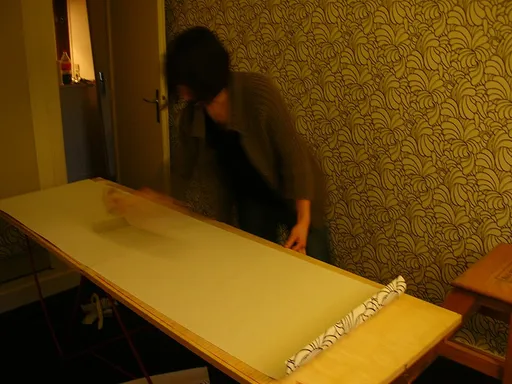
Wallpapering wallpaperingCC BY 2.0 · GuiGui Les Bons Skeudis from Paris 11ème, France · source 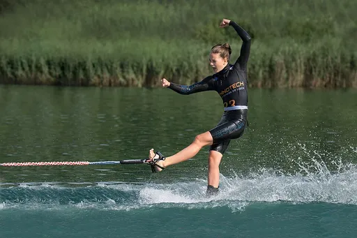
Water skiing water-skiingCC BY-SA 4.0 · Isiwal · source 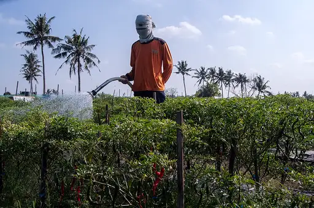
Watering plants watering-plantsCC BY-SA 4.0 · Jaljog · source 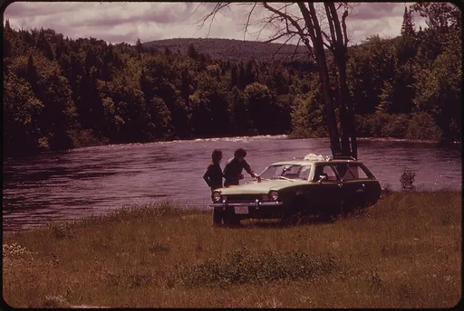
Waxing a car waxing-a-carPublic domain · Charles Steinhacker · source 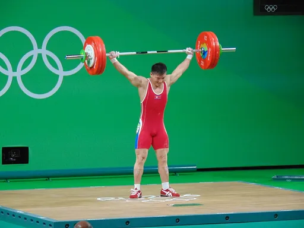
Weightlifting weightliftingCC BY-SA 2.0 · Sander van Ginkel · source 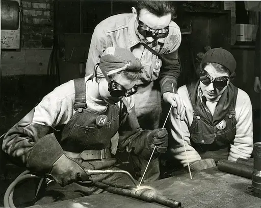
Welding weldingPublic domain · M. Marshall · source Whittling whittlingCC0 · Unknown authorUnknown author · source Window washing window-washingCC BY-SA 4.0 · Dietmar Rabich · source 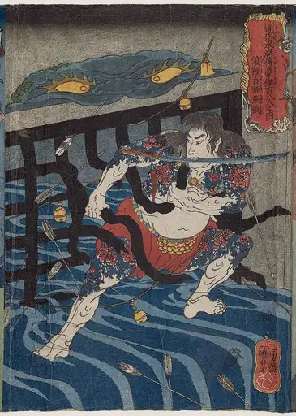
Woodcutting woodcuttingPublic domain · Utagawa Kuniyoshi · source 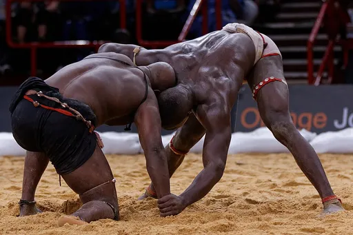
Wrestling wrestlingCC BY-SA 3.0 · Pierre-Yves Beaudouin · source 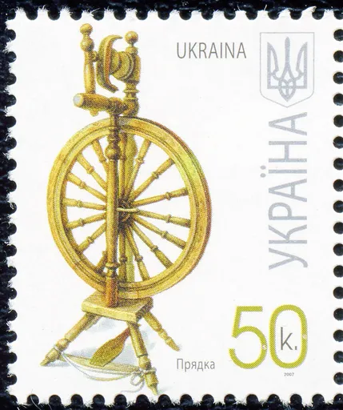
Yarn spinning yarn-spinningPublic domain · Катерина Штанко · source 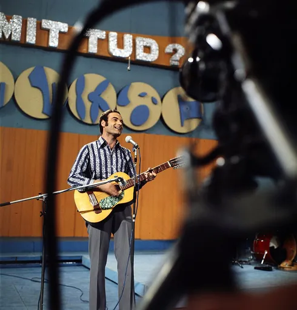
Yodeling yodelingCC BY-SA 3.0 · FOTO: Fortepan - ID 191055 Adományozó/Donor: Szalay Zoltán · source 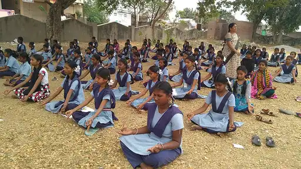
Yoga yogaCC BY-SA 4.0 · Dr Shabana Sultahana · source 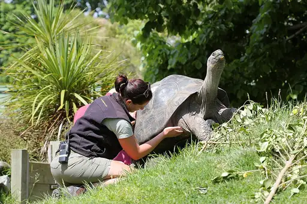
Zookeeper zookeeperCC BY-SA 3.0 · Avenue · source 1 2 3 4 5 6 7 8 9 10 11